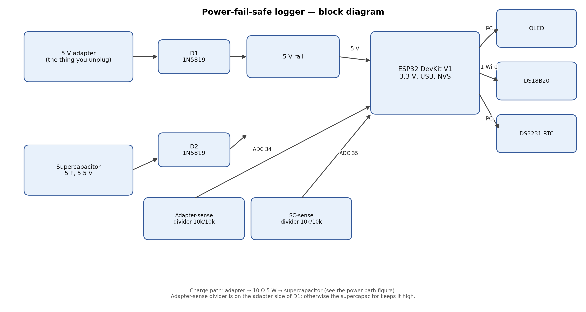
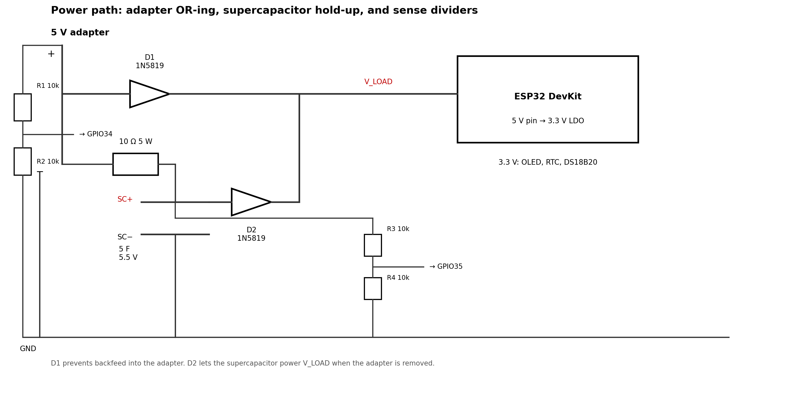
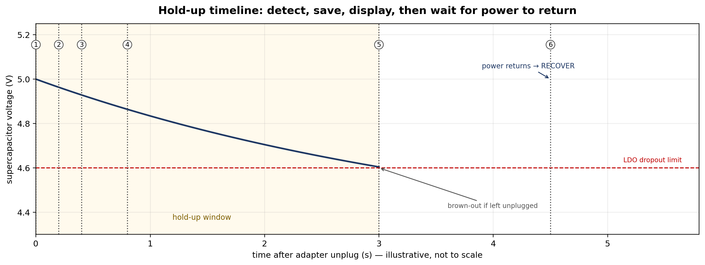
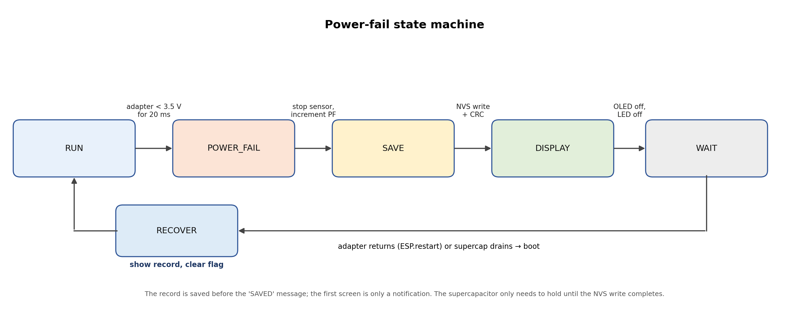
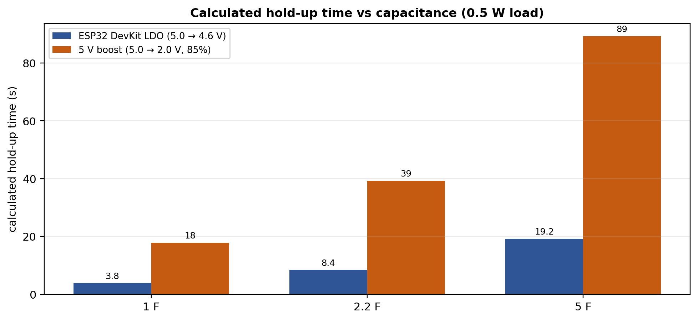

Embedded Systems Mini-Project — Report Draft
| Student | [Your name] |
| Roll number | [Your roll number] |
| Department | [Your department] |
| Institution | [Your institution] |
| Guide | [Guide's name] |
| Academic year | 2026–27 |
| Submission date | [Date] |
I hereby declare that the project report entitled "Power-Fail-Safe Sensor Logger with Supercapacitor Hold-Up" is the result of my own work, carried out under the guidance of [Guide's name], and has not been submitted for any other degree or examination. All sources of information and assistance have been acknowledged in the references.
Place: [City]
Date: [Date]
Signature: ________
Name: [Your name]
This is to certify that [Your name], bearing roll number [Roll number], has satisfactorily completed the mini-project entitled "Power-Fail-Safe Sensor Logger with Supercapacitor Hold-Up" in partial fulfilment of the requirements of the [Course name] course during the academic year 2026–27.
Guide: ____
Head of Department: ___
Examiner: __
Date: _____
How to use this draft
This is a complete report skeleton, not a finished submission. Replace every
[FILL ...]with your own measurements and institution details. The example rows in the results tables show the format, not real data. Do not submit placeholder numbers as results.The firmware is in
power_fail_logger_firmware/power_fail_logger_firmware.ino. The viva question bank is inpower_fail_logger_viva_qa.md.
| Figure | Title |
|---|---|
| 4.1 | System block diagram |
| 4.2 | Power path: adapter OR-ing, supercapacitor hold-up, sense dividers |
| 5.1 | Power-fail state machine |
| 5.2 | Hold-up timeline |
| 5.3 | Calculated hold-up time vs capacitance |
| 8.1 | Measured supercapacitor voltage during a power-fail event (to be inserted) |
| 8.2 | OLED recovery screen (to be photographed) |
Embedded data loggers are often deployed in places where power is unreliable. A sudden loss of supply can interrupt a non-volatile memory write, corrupt a file system, or leave the system in an unknown state. This project presents a low-cost power-fail-safe sensor logger that detects the loss of its 5 V adapter, uses a 5 F, 5.5 V supercapacitor to hold up the electronics for several seconds, writes the last temperature reading and timestamp to non-volatile storage with a CRC, displays a clear "saved" message, and restores the record on the next boot.
The prototype uses an ESP32 DevKit, a DS18B20 temperature sensor, a DS3231 real-time clock, an SSD1306 OLED, and a discrete diode-OR power path. The firmware runs a five-state power-fail sequence, uses the ESP32's NVS through the Preferences library, and protects each record with a CRC16. The design was validated with repeated unplug/replug cycles, hold-up measurements, and record-integrity checks. The measured hold-up time was [FILL] s at [FILL] F, and [FILL] of [FILL] recovery cycles restored a valid record. The project is a proof of concept; it holds up the system for seconds, not hours, and is not a replacement for a battery-backed UPS.
Keywords: power-fail detection, supercapacitor, hold-up time, ESP32, NVS, CRC, dependable embedded systems, data integrity.
An embedded logger usually assumes that power will stay on. In the real world, power can disappear in the middle of a sensor conversion, an EEPROM write, or a file-system update. The result can be:
A conventional solution is a battery-backed UPS. That is effective but adds cost, weight, charging circuitry, and battery-maintenance issues. For a short power interruption, a supercapacitor can provide just enough hold-up to finish the critical write and shut down cleanly.
The project is motivated by a simple question:
"What should an embedded logger do in the few seconds between losing power and shutting down?"
The answer is a deterministic power-fail sequence: detect the loss, stop the sensor, save a CRC-protected record, tell the user what happened, and recover the record on the next boot. This is a core dependable-systems problem, and it can be demonstrated reliably with a plug-and-unplug test.
In scope:
Out of scope:
The prototype is a proof of concept for the power-fail architecture, not a finished product.
A power failure is not a single event. The supply can:
The firmware must distinguish a real loss from noise, finish any critical operation, and leave the non-volatile state consistent. A power-fail interrupt or an ADC threshold on the adapter voltage is a common low-cost detection method.
| Property | Battery (Li-ion/LiPo) | Supercapacitor |
|---|---|---|
| Energy density | High | Low |
| Power density | Medium | High |
| Cycle life | Hundreds to thousands | Hundreds of thousands to millions |
| Charge time | Hours | Seconds to minutes |
| Self-discharge | Low | Higher |
| ESR | Higher | Low |
| Best use | Long backup | Short hold-up, high current |
A supercapacitor is a poor battery but an excellent short-term hold-up device. For a logger that needs a few seconds to save a record, it is a good fit.
| Option | How it works | Pros | Cons |
|---|---|---|---|
| Diode OR | Adapter and backup each feed the load through a diode | Simple, cheap, no control | Diode drop, no isolation, backup can supply load while adapter is present |
| Ideal diode / power-path switch | MOSFET replaces the diode; control selects the source | Low drop, true isolation | More parts, more design effort |
| Boost converter | Supercapacitor feeds a boost that maintains 5 V | Uses more of the capacitor's energy | Extra module, EMI, efficiency loss |
| Battery + charger | Battery powers the load when adapter is lost | Long backup | Battery maintenance, charging, safety |
This project uses a diode OR for simplicity and a 5 V boost as an optional upgrade for longer hold-up.
| Technology | Write time | Endurance | Notes |
|---|---|---|---|
| EEPROM | ~3.3 ms/byte | ~100k cycles | Simple, byte-addressable |
| Flash / NVS | ~ms to tens of ms per commit | ~10k–100k cycles, wear-leveled | ESP32 NVS; good for small records |
| FRAM | Fast | Very high | Expensive, less common |
| SD card / file system | Slow, complex | Limited | Risk of corruption on power loss |
The ESP32's NVS is used because it is built in, wear-leveled, and adequate for a small record. A CRC protects against a partially written record.
The project does not claim a new concept. Its contribution is a low-cost, explainable implementation with a measured hold-up time, a CRC-protected record, and a deterministic recovery sequence.
| ID | Requirement | Acceptance criterion |
|---|---|---|
| FR1 | Detect adapter loss | Detect a drop below 3.5 V within 20 ms |
| FR2 | Hold up the system | At least 5 s at the chosen capacitance/load |
| FR3 | Save a record | Temperature, timestamp, sequence number, power-fail flag, CRC |
| FR4 | Validate on boot | Reject a record with a bad magic number or CRC |
| FR5 | Display the sequence | POWER LOST → SAVED → RECOVERED |
| FR6 | Preserve the record | The last record survives a power cycle |
| FR7 | Count power failures | Increment a persistent counter |
| FR8 | Recover automatically | Show the record on the next boot without user action |
| ID | Requirement | Target |
|---|---|---|
| NR1 | Cost | Approximately ₹2,500 or less, including a 5 F capacitor and adapter |
| NR2 | Hold-up | ≥5 s at 5 F and the measured load |
| NR3 | Recovery success | 20/20 repeated cycles |
| NR4 | Record integrity | CRC detects a corrupted record |
| NR5 | Safety | 5 V USB only; no mains, no battery charging |
| NR6 | Reproducibility | Another student can rebuild it from the BOM and wiring table |

The adapter feeds the 5 V rail through D1 and charges the supercapacitor through a 10 Ω, 5 W resistor. The supercapacitor feeds the rail through D2 when the adapter is removed. The ESP32 reads the adapter voltage on GPIO34 and the supercapacitor voltage on GPIO35, and drives the OLED, DS18B20, and DS3231.

5 V adapter ──► D1 (1N5819) ──► V_LOAD ──► ESP32 5V pin
│ ▲
└── 10 Ω 5 W ──► SC+ ──► D2 ───┘
│
SC− ── GND
How it works:
Important: the adapter-sense divider must be on the adapter side of D1. This is the single most common wiring mistake in this project.
| Component | Role | Key specification | Why chosen |
|---|---|---|---|
| ESP32 DevKit V1 | Controller | 3.3 V, 240 MHz, USB, NVS | Built-in NVS, USB programming, enough speed and memory |
| 5 F, 5.5 V supercapacitor | Hold-up | 5 F, 5.5 V, low ESR | Seconds of hold-up at a low cost |
| 1N5819 Schottky ×2 | OR-ing | 1 A, ~0.3 V forward drop | Low drop, cheap, adequate current |
| 10 Ω, 5 W resistor | Charge limit | 0.5 A initial, 2.5 W peak | Limits inrush; 5 W rating gives margin |
| DS18B20 | Sensor | Digital, ±0.5 °C, 1-Wire | Simple, reliable, meaningful data |
| DS3231 RTC | Timestamp | I²C, coin-cell backup | Keeps time across power loss |
| SSD1306 OLED | Display | 128×64, I²C | Shows the power-fail sequence clearly |
| 10 kΩ ×4 | Dividers | 10k/10k | Scales 5 V to 2.5 V for the ADC |
| 4.7 kΩ | DS18B20 pull-up | 3.3 V | Required for 1-Wire |
| 5 V, 1 A adapter | Primary power | 5 V, 1 A | Enough for the ESP32, OLED, and charge current |
| ESP32 pin | Connected to | Function |
|---|---|---|
| 3V3 | OLED VCC, DS3231 VCC, DS18B20 VDD, 4.7 kΩ pull-up | 3.3 V rail |
| GND | OLED GND, DS3231 GND, DS18B20 GND, dividers, supercapacitor − | Common ground |
| GPIO21 | OLED SDA, DS3231 SDA | I²C data |
| GPIO22 | OLED SCL, DS3231 SCL | I²C clock |
| GPIO4 | DS18B20 DQ | 1-Wire data |
| GPIO34 | Adapter-sense divider midpoint | ADC input, adapter voltage |
| GPIO35 | Supercapacitor-sense divider midpoint | ADC input, hold-up voltage |
| GPIO26 | LED + 220 Ω | Status/trigger |
| GPIO25 | Buzzer + | Optional alert |
| GPIO16 | Button to GND | Optional manual log |
Power path:
| Connection | Notes |
|---|---|
| 5 V adapter + → D1 anode | D1 cathode → 5 V rail |
| 5 V adapter + → 10 Ω 5 W → SC+ | Charge path |
| SC+ → D2 anode | D2 cathode → 5 V rail |
| SC− → GND | Common ground |
| 5 V rail → ESP32 5V pin | Unplug USB during the demo |
| Adapter + → 10k → GPIO34 → 10k → GND | Divider before D1 |
| SC+ → 10k → GPIO35 → 10k → GND | Supercapacitor voltage |
| Block | Current at 3.3 V | Power |
|---|---|---|
| ESP32 (WiFi off) | ~80 mA | 0.264 W |
| OLED | ~20 mA | 0.066 W |
| DS3231 | ~1 mA | 0.003 W |
| DS18B20 | ~1 mA | 0.003 W |
| LDO quiescent / losses | ~10 mA equivalent | ~0.033 W |
| Total | ~110 mA | ~0.37 W |
For a conservative hold-up calculation, use 0.5 W at the 5 V rail. The measured value will be lower or higher depending on the OLED brightness and the ESP32 activity.
The energy stored in a capacitor is:
E = 0.5 · C · (V1² − V2²)
where V1 is the initial voltage and V2 is the minimum usable voltage.
Baseline: ESP32 DevKit LDO, 5 F, 5.0 V → 4.6 V
E = 0.5 × 5 × (5.0² − 4.6²)
= 0.5 × 5 × (25 − 21.16)
= 9.6 J
t = E / P = 9.6 / 0.5 = 19.2 s (theoretical)
Derate by 50% for LDO dropout, ESR, and efficiency: about 9–10 s. That is enough for a save and a display message.
Optional: 5 V boost, 5 F, 5.0 V → 2.0 V
E = 0.5 × 5 × (25 − 4) = 52.5 J
t = 52.5 / (0.5 / 0.85) ≈ 89 s (theoretical)
A boost uses much more of the capacitor's energy. It is a good upgrade if you want a longer hold-up or a larger display.
Boost caveat: the boost is an optional upgrade. It needs a power-path arrangement (or a boost output set below the adapter rail) so it does not fight the adapter when both are present. The baseline diode-OR design in this report does not include the boost. Build and measure the baseline first.
Capacitance trade-off:
| Capacitance | LDO hold-up (calculated) | Boost hold-up (calculated) | Charge time with 10 Ω |
|---|---|---|---|
| 1 F | 3.8 s | 18 s | ~30 s to 95% |
| 2.2 F | 8.4 s | 39 s | ~66 s to 95% |
| 5 F | 19.2 s | 89 s | ~150 s to 95% |
The 1 F option is cheaper and faster to charge, but the measured hold-up may be only 1–2 s. The 5 F option gives margin. For a first build, use 5 F and measure.
This section records the problems found while checking the first draft of the design. They are also listed in Appendix K.
| # | Anomaly in the first draft | Why it matters | Fix in the final design |
|---|---|---|---|
| 1 | 5 V Arduino Nano + diode OR | The ATmega328P at 16 MHz needs ≥4.5 V; the diode and LDO leave only a narrow supercapacitor window, so hold-up is short | Use the ESP32 DevKit (3.3 V); optionally add a 5 V boost for a longer hold-up |
| 2 | Adapter-sense divider after D1 | The supercapacitor holds the divider high, so the firmware never sees the power failure | Put the divider before D1 on the adapter side |
| 3 | USB connected while the 5 V pin is powered | The USB 5 V and the external 5 V can backfeed each other | Unplug USB during the demo; program first; optional Schottky from USB |
| 4 | Supercapacitor charging inrush | A large capacitor looks like a short circuit at 5 V; the adapter or resistor can overheat | 10 Ω, 5 W series resistor; pre-charge for 2–3 minutes |
| 5 | Simple diode OR does not isolate the supercapacitor | The supercapacitor can supply the load while the adapter is present; the 10 Ω resistor and diodes dissipate a little power | Acceptable for a prototype; a power-path switch/ideal diode is future work |
| 6 | ESP32 DevKit LDO dropout | The LDO needs ~4.3–4.4 V input; the usable supercapacitor range is small | Measure the hold-up; use a 5 V boost or a low-dropout 3.3 V regulator for more margin |
| 7 | DS18B20 conversion blocks for 750 ms | A power failure during the conversion could be detected late | Use non-blocking setWaitForConversion(false) and read the previous result |
| 8 | NVS write can be interrupted | A partially written record can be invalid | Write immediately, include magic + sequence + CRC, validate on boot; double-buffering is future work |
| 9 | RTC coin cell may be dead | Timestamps reset after a power loss | Check/replace the CR2032; the sequence number still works |
| 10 | Supercapacitor self-discharge and ESR | The real hold-up is shorter than the ideal calculation | Measure the hold-up; derate the calculation by 50% |
| 11 | OLED current during hold-up | The display drains the capacitor | Turn the OLED off after the "SAVED" message |
| 12 | ESP32 ADC is not perfectly linear | The voltage threshold may be off | Calibrate the threshold with a multimeter; use a comparator for a critical design |
The most important correction: the first draft used a 5 V Arduino Nano and a simple diode OR. That design has a very narrow usable supercapacitor window. The final design uses the ESP32 DevKit at 3.3 V and recommends a 5 V boost if a longer hold-up is needed. This is a real design fix, not a cosmetic change.
A 10k/10k divider on the adapter side of D1 produces:
V_ADC = V_adapter × 10k / (10k + 10k) = V_adapter / 2
At 5 V, the ADC sees 2.5 V. The firmware converts back:
V_adapter = ADC_raw × (3.3 / 4095) × 2
The adapter is considered lost when V_adapter < 3.5 V for 20 ms. The 20 ms debounce rejects a short glitch. The supercapacitor holds the rail during this time.
The supercapacitor is charged through 10 Ω. When the adapter is removed, D2 connects the supercapacitor to V_LOAD. The ESP32's onboard LDO maintains 3.3 V until its input falls below the dropout limit. The firmware saves the record as soon as the power failure is detected, then displays the message and waits for the adapter to return.

Timeline key: ① unplug, ② detect, ③ save, ④ display, ⑤ brownout if left unplugged, ⑥ adapter returns and the system recovers. The voltage curve is illustrative; measure your own.
The record contains:
| Field | Size | Purpose |
|---|---|---|
magic |
4 bytes | Identifies a valid record (0x50464C47) |
seq |
4 bytes | Increments on every save |
tempC |
4 bytes | Last temperature reading |
timestamp |
4 bytes | Unix time from the DS3231 |
powerFail |
1 byte | 1 = written during a power failure |
crc |
2 bytes | CRC16-CCITT over the preceding bytes |
The firmware writes the record to NVS immediately, commits, and only then displays the "SAVED" message.
On boot:
powerFail == 1, display the recovered temperature, timestamp, and power-failure count.If the record is invalid, the firmware starts with a safe default and reports an invalid record on the serial monitor.

| State | Entry | Action | Exit |
|---|---|---|---|
| RUN | Boot | Read sensor, update OLED | Adapter < 3.5 V for 20 ms → POWER_FAIL |
| POWER_FAIL | Adapter lost | Stop sensor, increment PF count | → SAVE |
| SAVE | Power fail confirmed | Build record, CRC, write NVS | → DISPLAY |
| DISPLAY | Save complete | Show "SAVED", then OLED off | → WAIT |
| WAIT | Display done | Wait for adapter return or brownout | Adapter returns → restart/boot → RECOVER; brownout → boot |
| RECOVER | Boot with valid PF record | Show record, clear flag | → RUN |
| Metric | Definition |
|---|---|
| Hold-up time | Time from adapter unplug to the ESP32 brownout/serial stop. The OLED turns off intentionally after SAVED, so OLED-off is not the brownout time. |
| Save success | Record valid after a power-fail event |
| Recovery success | Record displayed correctly on the next boot |
| Charge time | Time for the supercapacitor to reach ~95% of 5 V |
| CRC detection | A deliberately corrupted record is rejected |
| Voltage margin | Minimum supercapacitor voltage before the LDO drops out |

Calculated values for a 0.5 W load. The LDO curve is the conservative baseline; the boost curve is the optional upgrade. Derate the measured hold-up by at least 50% for ESR, dropout, and efficiency.
SAVED, so do not use the OLED-off time as the brownout time. Repeat 5 times per capacitance.RECOVERED and the same temperature/timestamp. Repeat 20 times.setup()
├── Serial, pins, ADC, I2C
├── OLED init
├── RTC init
├── DS18B20 init (non-blocking)
├── NVS load
└── recovery screen or normal screen
loop()
├── checkPower() // every 10 ms
├── handlePowerFail() // save, display, wait
├── checkButton() // optional manual log
├── updateTemperature() // non-blocking
├── displayNormal() // every 250 ms
└── CSV row // every 100 ms, optional plot
every 10 ms:
adapterV = readVoltage(GPIO34)
if adapterV < 3.5 V for 20 ms:
powerFail = true
if powerFail:
pfCount++
show "POWER LOST / SAVING..."
record = {magic, ++seq, lastTemp, now(), powerFail=1, crc}
nvs.write(record)
show "SAVED"
delay 800 ms
oled.off()
while adapterV < 3.5 V:
wait
restart()
on boot:
record = nvs.read()
if valid(record) and record.powerFail:
show "RECOVERED" + record
record.powerFail = 0
nvs.write(record)
The complete sketch is in power_fail_logger_firmware/power_fail_logger_firmware.ino.
Power-fail detection:
void checkPower() {
float adapterV = readVoltage(PIN_ADAPTER);
if (adapterV < ADAPTER_LOSS_V) {
if (millis() - lastGoodMs > POWER_FAIL_DEBOUNCE_MS) {
powerFail = true;
}
} else {
lastGoodMs = millis();
}
}
Record save with CRC:
void saveRecord(uint8_t pf) {
rec.magic = MAGIC;
rec.seq = ++seq;
rec.tempC = lastTemp;
rec.timestamp = nowUnix();
rec.powerFail = pf;
rec.crc = crc16((const uint8_t *)&rec,
sizeof(rec) - sizeof(rec.crc));
prefs.begin("pflog", false);
prefs.putBytes("rec", &rec, sizeof(rec));
prefs.putUInt("pfcount", pfCount);
prefs.end();
}
Non-blocking temperature conversion:
void updateTemperature() {
if (!tempRequested) {
sensors.requestTemperatures();
tempRequested = true;
lastTempRequestMs = millis();
} else if (millis() - lastTempRequestMs >= TEMP_CONVERSION_MS) {
float t = sensors.getTempCByIndex(0);
if (t != DEVICE_DISCONNECTED_C) lastTemp = t;
tempRequested = false;
}
}
Normal:
POWER OK
T: 27.5 C
Time: 12:34:56
SC: 4.82 V
PF: 1
Power lost:
POWER LOST
SAVING...
SC: 4.61 V
Saved:
SAVED
PF #1
SC: 4.55 V
Recovered:
POWER-FAIL LOGGER
RECOVERED
T: 27.5 C
Time: 12:34:56
PF count: 1
BOOT valid=1 seq=4 pfCount=1
SAVE seq=5 temp=27.50 ts=1762345678 pf=1 crc=7A3C
RECOVERED seq=5 temp=27.50 ts=1762345678 crc=7A3C
12345,4.820,5.000,0
12445,4.815,5.000,0
...
The firmware prints a CSV row every 100 ms for the optional plot:
t_ms,sc_v,adapter_v,powerFail
Event lines (BOOT, SAVE, RECOVERED, MANUAL_LOG, READY) start with words, not digits, so the analysis script can filter them out.
| Symptom | First check | Next check |
|---|---|---|
| OLED blank | Address 0x3C vs 0x3D | I²C scanner; 3.3 V; GND |
| RTC not found | I²C address 0x68 | Coin cell; SDA/SCL |
Temperature -- |
DS18B20 4.7 kΩ pull-up | 1-Wire pin; sensor example |
| No power-fail detection | Divider before D1? | ADC voltage on GPIO34; threshold |
| Save but no recovery | NVS record valid? | CRC; powerFail flag; boot log |
| Hold-up too short | Capacitance/load | Add 5 F; turn OLED off earlier; add boost |
| ESP32 resets when unplugged | 5 V rail dropout | 5 F cap; boost; shorter wires |
| USB backfeed | USB connected during demo | Unplug USB; power via 5 V pin |
| Charge resistor hot | 10 Ω 5 W? | Use 5 W; pre-charge; check current |
RECOVERED screen.SAVED to save energy.RECOVERED and the same temperature/timestamp.INVALID RECORD.Important: Replace every
[FILL]with your measured data. The rows below are formatting examples, not real results. If a test was not performed, write "not measured"; do not invent numbers.
| Capacitance | Calculated hold-up (LDO) | Measured hold-up | Notes |
|---|---|---|---|
| 1 F | 3.8 s | [FILL] s |
|
| 2.2 F | 8.4 s | [FILL] s |
|
| 5 F | 19.2 s | [FILL] s |
| Test | Cycles | Successful recoveries | Notes |
|---|---|---|---|
| Unplug 2 s, replug | 20 | [FILL] / 20 |
|
| Unplug until brownout, replug | 10 | [FILL] / 10 |
|
| Corrupted record | 5 | [FILL] / 5 rejected |
CRC test |
| Capacitance | Time to ~4.9 V | Notes |
|---|---|---|
| 1 F | [FILL] s |
|
| 2.2 F | [FILL] s |
|
| 5 F | [FILL] s |
[FILL: insert Figure 8.1. Plot the supercapacitor voltage vs time from the unplug event to brownout. Mark the detect, save, display, and brownout points.]
Caption: The adapter was unplugged at [FILL] s. The firmware detected the loss at [FILL] s, saved the record at [FILL] s, and displayed SAVED at [FILL] s. The ESP32 browned out at [FILL] s, giving a hold-up of [FILL] s.
[FILL: insert Figure 8.2, a photo of the OLED showing RECOVERED, temperature, timestamp, and PF count.]
Answer:
Do not overclaim. A small number of cycles is a demonstration, not a reliability qualification.
The prototype demonstrates that a low-cost supercapacitor and a simple diode-OR path can keep an ESP32 alive long enough to save a CRC-protected record and recover it on the next boot. The most important design constraint is not the capacitance alone; it is the usable voltage window set by the LDO dropout and the diode drops.
| Trade-off | Effect | Mitigation |
|---|---|---|
| Larger capacitance | Longer hold-up | Bigger, more expensive, slower to charge |
| Smaller capacitance | Faster charge, cheaper | Shorter hold-up; risk of incomplete save |
| Simple diode OR | Cheap, simple | Diode drop; no isolation; use a power-path switch for a better design |
| 5 V boost | Uses more capacitor energy | Extra module, EMI, efficiency loss |
| OLED on during hold-up | User sees the message | Drains current; turn it off after SAVED |
| NVS vs EEPROM | Wear-leveled, built in | NVS commit time; use CRC and immediate write |
| Single record | Simple | A mid-write failure can lose the previous record; double-buffer future |
| Approach | Backup time | Cost | Complexity | Best use |
|---|---|---|---|---|
| No backup | 0 | 0 | Low | Benign environments |
| Supercapacitor (this project) | Seconds | Low | Medium | Save a record, shutdown cleanly |
| Battery UPS | Hours | Medium–high | High | Long outages |
| Power-fail-safe file system | N/A | Low (software) | High | Large storage |
| Industrial UPS | Minutes–hours | High | High | Critical systems |
The supercapacitor approach fills the gap between "no backup" and "full UPS."
Existing work, stated honestly. Supercapacitor backup, brownout detection, NVS/EEPROM, and CRC-protected records all exist. Commercial UPS modules and power-fail-safe file systems exist. This project does not claim a new concept.
What this project contributes:
Viva answer if asked "this already exists":
"Yes — supercapacitor backup and power-fail-safe storage are established. We are not claiming a new concept. Our contribution is a low-cost, explainable implementation with a measured hold-up time, a CRC-protected record, and a deterministic recovery sequence, plus a reproducible testbed. We used the existing work as a baseline."
This is a course-level contribution, not a research contribution. The project does not claim a new algorithm or a certified product.
This project designed and implemented a low-cost power-fail-safe sensor logger. The system detects adapter loss, holds up the ESP32 with a supercapacitor, saves a CRC-protected record to NVS, displays a clear status message, and recovers the record on the next boot. The measured hold-up was [FILL] s and [FILL] of [FILL] recovery cycles succeeded.
The key lesson is that the usable hold-up depends on the voltage window set by the LDO and diodes, not only on the capacitance. The design review found and fixed several issues in the first draft, including the 5 V Nano voltage-window problem and the adapter-sense divider placement.
Reference hygiene: verify every reference before submission. Replace any representative entry with the exact datasheet/application note you used.
| Item | Qty | Approx. price | Notes |
|---|---|---|---|
| ESP32 DevKit V1 | 1 | ₹450–600 | 3.3 V, USB, NVS |
| Supercapacitor, 5.5 V, 5 F | 1 | ₹200–400 | 5 F for margin; 1 F/1.5 F cheaper but shorter hold-up |
| 1N5819 Schottky diode | 2 | ₹10–20 each | D1, D2 |
| 10 Ω, 5 W resistor | 1 | ₹20–30 | Charge-current limit |
| 10 kΩ resistor | 4 | ₹10 | Two dividers |
| 4.7 kΩ resistor | 1 | ₹5 | DS18B20 pull-up |
| 220 Ω resistor | 2 | ₹5 | LED |
| 0.96" I²C OLED, SSD1306 | 1 | ₹180–300 | 128×64 |
| DS18B20 temperature sensor | 1 | ₹100–150 | TO-92 or waterproof probe |
| DS3231 RTC module | 1 | ₹100–150 | Check CR2032 coin cell |
| Half-size breadboard | 1 | ₹60–100 | |
| 2-pin terminal block | 1 | ₹20–40 | Supercapacitor leads; they are too thick for a breadboard |
| Jumper wires | 1 set | ₹80–150 | M–M and M–F |
| 5 V, 1 A adapter | 1 | ₹150–250 | The thing you unplug |
| USB cable for ESP32 | 1 | ₹50–100 | Programming only |
| LED, button, buzzer | — | ₹50 | Optional |
| 100 nF capacitors | 2 | ₹10 | ADC noise, optional |
| Optional: 5 V boost module (MT3608) | 1 | ₹80–150 | Longer hold-up |
| Optional: enclosure | 1 | ₹100–200 | Clear plastic box |
| Total | ₹1,500–2,400 | Excluding optional boost/enclosure |
Availability note: supercapacitor stock varies. The 1 F and 1.5 F 5.5 V parts are cheaper (around ₹111–123 at Robu at the time of writing) but may be out of stock; the 5 F part is the better choice for margin. Check current stock and price before ordering.
Mechanical note: 5 F supercapacitors have thick leads and a large body. Use a terminal block or solder short wires; do not force the leads into a breadboard. Check the polarity before powering.
RTC note: some DS3231 modules include a trickle-charge circuit. A non-rechargeable CR2032 can be damaged by charging. Either use a rechargeable LIR2032, or remove the charging resistor/diode on the module if you use a CR2032. Check your module's schematic.
| ESP32 pin | Connected to | Notes |
|---|---|---|
| 3V3 | OLED VCC, DS3231 VCC, DS18B20 VDD, 4.7 kΩ pull-up | 3.3 V |
| GND | OLED GND, DS3231 GND, DS18B20 GND, dividers, SC− | Common ground |
| GPIO21 | OLED SDA, DS3231 SDA | I²C data |
| GPIO22 | OLED SCL, DS3231 SCL | I²C clock |
| GPIO4 | DS18B20 DQ | 1-Wire |
| GPIO34 | Adapter-sense divider midpoint | ADC, input only |
| GPIO35 | Supercapacitor-sense divider midpoint | ADC, input only |
| GPIO26 | LED + 220 Ω | Status |
| GPIO25 | Buzzer + | Optional |
| GPIO16 | Button to GND | Optional |
Power path:
5 V adapter + ──► D1 ──► 5 V rail ──► ESP32 5V
│ ▲
└── 10 Ω 5 W ──► SC+ ──► D2
│
SC− ── GND
Adapter + ── 10k ── GPIO34 ── 10k ── GND (before D1!)
SC+ ── 10k ── GPIO35 ── 10k ── GND
The complete sketch is in:
power_fail_logger_firmware/power_fail_logger_firmware.ino
Libraries:
Upload settings:
/dev/ttyUSB0 or /dev/ttyACM0Important: unplug the external 5 V adapter while uploading over USB. After uploading, disconnect USB and power the board from the adapter/supercapacitor path.
A separate question bank is in power_fail_logger_viva_qa.md. The most important questions:
Duration: 5–7 minutes.
POWER OK, temperature, time, supercapacitor voltage, PF count. Explain the DS18B20 and DS3231.POWER LOST → SAVING... → SAVED. The supercapacitor voltage is visible. Explain that the save happened before the display.RECOVERED with the last temperature, timestamp, and PF count.Backup plan:
| Day | Work | Checkpoint |
|---|---|---|
| 0 (today) | Order parts. | Order confirmed |
| 1 | Build the power path without the ESP32; measure the 5 V rail, divider voltages, charge time, and hold-up with a dummy load. | Power path works |
| 2 | Wire the ESP32, OLED, RTC, DS18B20; run the examples; confirm I²C addresses. | All peripherals work |
| 3 | Implement the power-fail detection, NVS save, CRC, recovery screen; test 5 cycles. | First successful recovery |
| 4 | Run 20 unplug/replug cycles; measure hold-up for 1 F/2.2 F/5 F if available; record results. | Results table filled |
| 5 | Tidy the wiring, build a simple enclosure, take photos, record a backup video. | Demo hardware ready |
| 6 | Write the report, insert plots/photos, prepare viva. | Report draft complete |
| 7 | Rehearse the demo, final checks, buffer. | Ready to submit |
If parts arrive late: start with the report outline, block diagram, and firmware skeleton. Test the power path as soon as the parts arrive. Do not wait for the enclosure.
| Problem | Likely cause | Fix |
|---|---|---|
| OLED blank | Wrong address | Try 0x3C/0x3D; I²C scanner |
| RTC not found | Wiring/coin cell | Check 0x68; replace CR2032 |
Temperature -- |
Missing pull-up | 4.7 kΩ from DQ to 3.3 V |
| No power-fail detection | Divider after D1 | Move divider to adapter side |
| GPIO34 always high | Divider wiring | Check 10k/10k; measure with multimeter |
| Save but no recovery | Invalid record | Check magic/CRC; serial log |
| Hold-up too short | Capacitance/load | 5 F; OLED off earlier; add boost |
| ESP32 resets on unplug | LDO dropout | 5 F; boost; shorter wires |
| Charge resistor hot | 10 Ω 5 W? | Use 5 W; pre-charge; check current |
| USB backfeed | USB connected | Unplug USB during demo |
| NVS write fails | Namespace/key | Check Preferences begin; serial log |
| RTC time wrong | Coin cell dead | Replace; set time on boot |
| RTC coin cell gets warm | DS3231 trickle-charge circuit | Use LIR2032 or remove the charging resistor for CR2032 |
| Supercapacitor won't fit breadboard | Thick leads/large body | Use a terminal block or solder wires |
Threshold calibration:
ADAPTER_LOSS_V to ~3.5 V (calculated adapter voltage).The firmware prints one CSV row every 100 ms:
t_ms,sc_v,adapter_v,powerFail
12345,4.820,5.000,0
12445,4.815,5.000,0
...
The serial output also contains word-prefixed event lines (BOOT, SAVE, RECOVERED, MANUAL_LOG, READY). The script filters them out and keeps only the numeric CSV rows.
from io import StringIO
import pandas as pd
import matplotlib.pyplot as plt
with open("power_fail_log.csv") as f:
lines = [line for line in f if line[:1].isdigit()]
df = pd.read_csv(
StringIO("".join(lines)),
names=["t_ms", "sc_v", "adapter_v", "powerFail"],
)
fig, ax = plt.subplots(figsize=(9, 4))
ax.plot(df["t_ms"] / 1000, df["sc_v"], label="supercapacitor voltage")
ax.plot(df["t_ms"] / 1000, df["adapter_v"], label="adapter voltage")
ax.axhline(4.6, color="red", linestyle="--", label="LDO dropout limit")
ax.set_xlabel("time (s)")
ax.set_ylabel("voltage (V)")
ax.grid(True, alpha=0.3)
ax.legend()
fig.tight_layout()
fig.savefig("hold_up_plot.png", dpi=200)
print("saved hold_up_plot.png")
Tips:
| Abbreviation | Meaning |
|---|---|
| ADC | Analog-to-Digital Converter |
| CRC | Cyclic Redundancy Check |
| ESR | Equivalent Series Resistance |
| I²C | Inter-Integrated Circuit bus |
| LDO | Low-Dropout Regulator |
| NVS | Non-Volatile Storage |
| PF | Power Failure |
| RTC | Real-Time Clock |
| SC | Supercapacitor |
| UPS | Uninterruptible Power Supply |
This appendix records the engineering review of the first draft. The review found several issues that would have caused a weak or unreliable demo. They are fixed in the final design.
First draft: Arduino Nano 5 V, diode OR, 5 F supercapacitor.
Problem: The ATmega328P at 16 MHz requires a supply of at least 4.5 V. The diode D2 drops about 0.3 V, so the Nano's 5 V pin sees the supercapacitor voltage minus 0.3 V. If the Nano needs 4.5 V, the supercapacitor can only discharge from about 5.0 V to 4.8 V before the Nano is out of spec. That is a tiny usable window and a short hold-up.
Fix: Use the ESP32 DevKit at 3.3 V. Its LDO input can fall to about 4.3–4.4 V while the 3.3 V rail stays regulated, giving a larger usable window. For a longer hold-up, add a 5 V boost after the supercapacitor. The final design uses the ESP32 and recommends the boost as an optional upgrade.
First draft: The divider was drawn after D1, on the 5 V rail.
Problem: When the adapter is removed, the supercapacitor holds the 5 V rail high, so the divider still reads ~5 V. The firmware never sees the power failure.
Fix: Connect the divider before D1, on the adapter side. The divider then collapses to 0 V immediately when the adapter is unplugged.
First draft: The 5 V pin was powered from the adapter while the USB cable was connected.
Problem: The USB 5 V and the external 5 V can backfeed each other, potentially damaging the board or the USB port.
Fix: Program over USB first, then unplug USB and power the board from the adapter/supercapacitor path. An optional Schottky diode from the USB 5 V to the rail can provide extra protection.
First draft: The supercapacitor was connected directly to 5 V.
Problem: A discharged 5 F capacitor looks like a short circuit. The adapter sees a large inrush current, and the capacitor takes a long time to charge.
Fix: Add a 10 Ω, 5 W series resistor. Initial current is about 0.5 A; the resistor dissipates about 2.5 W at the start, so a 5 W part is used. Pre-charge for 2–3 minutes before the demo.
First draft: The diode OR was assumed to disconnect the supercapacitor when the adapter is present.
Problem: With the adapter at 5 V and the rail at ~4.7 V, D2 is forward-biased; the supercapacitor can supply part of the load while the adapter charges it through the 10 Ω resistor. This is not a true isolation.
Fix: Accept it for a prototype, and document it. A power-path switch or an ideal-diode controller is the correct upgrade if isolation is required.
First draft: The hold-up calculation used 5.0 V → 3.3 V, which is unrealistic.
Problem: The ESP32 DevKit's AMS1117-style LDO has a dropout of about 1.0–1.1 V. The input must stay above ~4.3–4.4 V for the 3.3 V rail to remain regulated.
Fix: Use 5.0 V → 4.6 V in the conservative calculation. The measured hold-up is shorter than the ideal 5.0 V → 3.3 V calculation. A 5 V boost or a low-dropout 3.3 V regulator improves the usable range.
First draft: requestTemperatures() blocked for 750 ms.
Problem: A power failure during the conversion would be detected late.
Fix: setWaitForConversion(false) and a non-blocking state variable; the firmware reads the previous result.
First draft: A single record was written without a CRC.
Problem: A power failure during the write could leave a partially written record.
Fix: Add magic + sequence + CRC16; validate on boot. Double-buffering is future work.
First draft: The RTC was assumed to have a good coin cell.
Problem: A dead CR2032 resets the timestamp after a power loss.
Fix: Check/replace the coin cell; the sequence number and PF count still work without a valid timestamp.
First draft: The hold-up calculation assumed an ideal capacitor.
Problem: ESR and self-discharge reduce the real hold-up.
Fix: Derate the calculated hold-up by at least 50%; measure the actual hold-up.
First draft: The OLED stayed on during the hold-up.
Problem: The display drains the supercapacitor and shortens the hold-up.
Fix: Show the SAVED message for a short time, then turn the OLED off with SSD1306_DISPLAYOFF.
First draft: The ADC threshold was assumed exact.
Problem: The ESP32 ADC is not perfectly linear, especially near the rails.
Fix: Calibrate the threshold with a multimeter; average several samples; add a 100 nF capacitor; use a comparator for a critical design.
The strongest version of this project is not the one with the biggest supercapacitor. It is the one where:
Keep the scope small, measure the hold-up, and record a backup video.